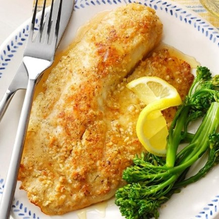

Pine Nut-Crusted Tilapia
What is Pine Nut-Crusted Tilapia?
This baked fish is a good source of protein. Adding the pine nut crust provides a good source of healthy fats and also adds a flavorful crunch against the soft, flaky white fish.
Ingredients
1/2 cup pine nuts, ground
1/4 cup all-purpose flour
1/4 teaspoon dill weed
1/4 teaspoon lemon-pepper seasoning
1 large egg
3 tablespoons lemon juice
1 teaspoon honey
4 tilapia fillets (6 ounces each)
2 tablespoons butter
Additional honey, optional
Instructions / How to Cook
1. In a shallow bowl, combine the pine nuts, flour, dill and lemon pepper. In another shallow bowl, combine the egg, lemon juice and honey. Dip fillets into egg mixture, then coat with nut mixture.
2. In a large nonstick skillet, cook fish in butter over medium heat until fillets just begin to flake easily with a fork, 4-5 minutes on each side. If desired, drizzle with additional honey.